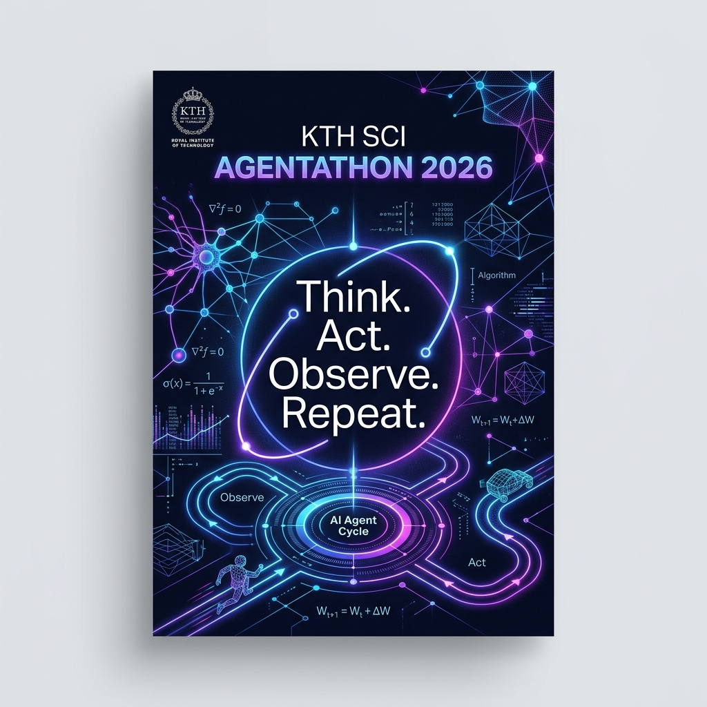

A full-day agentic AI hackathon for KTH School of Engineering Sciences. We explore the boundaries of AI agents in teaching, computing research, and KTH admin systems.

From syllabus to automated TAs. Building grading assistance, homework feedback, and student-facing tutoring agents like KTH's MiLLy.
Command-line agents on clusters. Creating SLURM pre-submission validators, debugging physical code (Verlet steppers), and automated data post-processing.
Open exploration of KTH admin. Fulfilling travel claims, eISP forms, budget tools, Canvas API, scheduling reminders, and laboratory condition monitoring.
| ID | Department/Division | Proposed AI Project / Question | Predicted Track |
|---|